Viva Roma!
Soy el hijastro de una potencia salvaje
de hocico despedazado.
De otra, no menos grande, —
acogido orgulloso,
y feliz en esta cuna
de Musas, del Derecho, de las Gracias,
donde cantaron Nasón y Virgilio,
y arengó Horacio.
Iósif Brodski
Capítulo 5
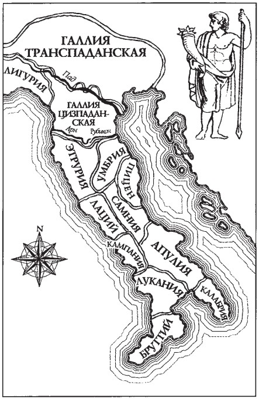
Qué ciudad asombrosa esta Roma. Eterna de verdad. No inmortal, sino eterna. Sobre ninguna ciudad del mundo, en toda la historia memorable para la humanidad, se ha escrito tal cantidad de libros, investigaciones, ensayos, tales versos y confesiones.
La ciudad eterna se ve como en «transparencia»: superposición de una capa del tiempo sobre otra. La Antigüedad se transparenta a través del Medievo. El Renacimiento, a través de todos los tiempos posteriores, incluso a través de las inconsecuencias de la época de Mussolini. En esta ciudad el tiempo te atraviesa, y tú atraviesas el tiempo con aliento ligero y entusiasmo del alma. Roma conoció tiempos diversos. Y también aquellos en que los foros de los emperadores servían de pastizal para las cabras. La alegoría de Roma es la Loba poderosa, y siempre la imagen de la Mujer.
A comienzos del siglo XIV circulaba el relato de cierto Fazio degli Uberti sobre sus paseos en compañía del geógrafo antiguo Solino. Y como si hubieran encontrado a una mujer marchita, con huellas de una belleza pretérita (la alegoría de Roma), que les contó su triste historia. No todo, sin embargo, era tan triste en el siglo XIV.
Roma, fundada (según la leyenda) en el siglo VIII a. C., perdió a finales del siglo III d. C. su significación de capital del imperio, y en el año 330 el emperador Constantino el Grande hizo capital la ciudad de Constantinopla, en la provincia de Asia Menor: Bizancio. En 495 el imperio se escindió en Occidental y Oriental. Con ello, Roma sigue siendo la capital del Imperio Romano de Occidente, cristiano-católico. Ciudad papal, sí, pero en aquellos tiempos débil y provincial respecto a la nueva Bizancio: la Segunda Roma.
Pero, como sabemos, Roma no pereció: vivió siempre su propia vida, pese a las incontables pruebas que le tocó padecer. Incursiones bárbaras, incendios, discordias intestinas, intrigas. Siguió siendo capital católica y mito de la historia antigua. Imposible borrar la historia vergonzosa, lo mismo que la triunfal. A diferencia de la nueva capital del Oriente, a la que esa historia apenas le empezaba. «Bizancio: un ethnos cristiano», escribirá el historiador Lev Gumiliov.
¿Qué tenía en mente Lev Nikoláievich? La abigarrada composición étnica del nuevo imperio no tenía tradiciones culturales comunes históricas. No se crearon gradualmente, por formación, sino que aparecieron como «desde arriba», a través de una única ideología cristiana. El cristianismo creaba un ethnos espiritual único, un campo común, donde las raíces no iban de abajo hacia arriba, sino que germinaban de arriba hacia abajo. He ahí la paradoja de Bizancio como ethnos cristiano.
Cierto Ciriaco Pizzicolli d'Ancona, comerciante y anticuario, recorría la ciudad a diario a caballo blanco y hacía inventario de los templos, teatros, palacios y termas antiguas, obeliscos, acueductos y arcos triunfales, puentes y columnas. Estudiaba su historia precristiana, «deseando revivir a los muertos y darlos a conocer a los contemporáneos». Este hombre notable compuso la primera «Guía». Levantaba planos de la ciudad y hacía croquis de lo que quedaba de tiempos remotos. Hizo un trabajo extraño: acercó y fundió la Roma antigua con la Roma cristiana, mostrando el asombroso fenómeno de la «transparencia» de un decorado histórico a través de otro. Ya a comienzos del siglo VII, en el año 609, el Panteón romano, erigido en el siglo II, se convirtió en la iglesia de Santa María Rotonda, y lo es hasta hoy.
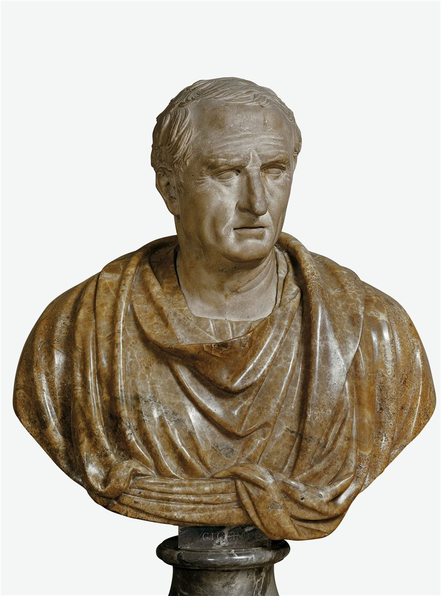
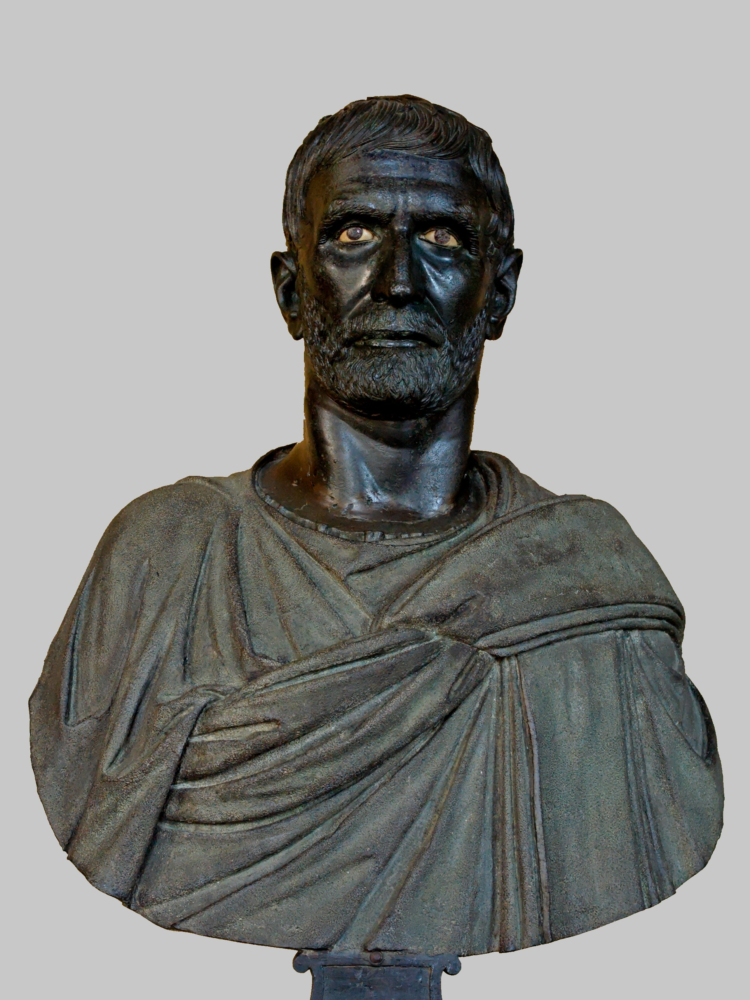
Los primeros arqueólogos y coleccionistas de la antigüedad romana fueron los sabios monjes benedictinos ya en el siglo V o VI. A finales del siglo VI el poder (tras la invasión de los lombardos) pasó de Bizancio de nuevo a los obispos-papas romanos.
Roma conservó siempre el aliento de la vida viva, y existe incluso el término latino «renovatio»: renovación. Las renovaciones fueron muchas, porque incluso en la época del Medievo temprano se conservaba un vínculo estrecho con toda la cultura antigua y se veneraban profundamente sus ruinas. Y en las basílicas se acondicionaban iglesias.
I. La vida como teatro
Todo el genio de la Antigua Grecia se invirtió en la creación de las ideas de la arquitectura de órdenes, del teatro, de la filosofía, de la escultura: fundamento de la ideología espiritual de todo el futuro mundo europeo hasta el día de hoy.
Todo el genio de la Antigua Roma se invirtió en la creación del Estado, prototipo de toda la estatalidad europea: la república y el imperio. ¿Con qué comenzó la república romana? Con la adopción, en el año 451 a. C., por los decenviros, del código de leyes civiles comunes para todos, o, como se las llama, las Doce Tablas. Las leyes civiles, la estructura estatal, es decir, la jurisprudencia: fundamento de la estatalidad romana. El juramento ante el pueblo sobre la Constitución, sobre el código, sobre el corpus de leyes: en primer lugar. Un ejército regular con oficialidad profesional: en segundo lugar. El Estado se funda en la alianza del ejército y la jurisprudencia.
El latín: lengua de juristas, de comandantes, lengua aforística de ingeniosos, «latín áureo»: lengua de la nueva vida y de los escritores-historiadores. El habla, el estilo del habla (por ejemplo, la retórica de Cicerón) se convirtió en modelo de estética de la palabra para los tiempos posteriores. Historiadores, arqueólogos, juristas, estadistas, escritores, poetas: a todos interesaba la historia romana.
Grecia creó formas perfectas de cultura contra todas las reglas comunes: la ausencia de estatalidad unificada, de fronteras, de discordias intestinas incesantes. El fenómeno griego está en la unidad nacional-espiritual en torno a las Olimpiadas, contra el abigarrado polifonismo de los polis. Roma creó el precedente de la estatalidad y de la cultura estatal.
Nos miramos en la Antigua Roma como en un espejo. En su superficie oscurecida y resquebrajada reconocemos rostros, costumbres, arribismo, vanidad, fastuosidad, el juego con la muerte y con la vida. Quizá por ahí convenga empezar: por el juego con la muerte y con la vida. Juegos con todo, con todos y con todos. El cristianismo está más cerca de las imágenes perfectas de la Grecia antigua. Roma conservó a lo largo de toda su vida el principal estereotipo psicológico estable: la pasión por el juego. El mundo es un teatro, y los hombres en él, actores.
Exíjanos espectáculos. Y el teatro somos nosotros mismos. El suicidio: libre elección del fin de la vida para cualquier ciudadano romano. No vergüenza, no cobardía, sino derecho. Derecho a decidir por sí mismo el propio destino.
En las funerarias de cualquier municipio se vendían los adminículos para el suicidio. Es ampliamente conocido que el emperador Nerón envió al filósofo Séneca, su maestro, una «tarjeta negra» con la propuesta de una partida voluntaria de la vida. Y cuando el héroe de Mijaíl Bulgákov, cierto rey de las tinieblas Voland, propone al bufetero, en lugar de los tormentos del hospital municipal, un suicidio público «en compañía de amigos y muchachas ebrias», tiene en mente las costumbres romanas del espectáculo. El sentimiento de la vida como escena y el derecho a decidir por sí mismo las cuestiones de la muerte: rasgo único de la conciencia romana. El historiador Suetonio, en el capítulo «El Divino Julio» (Cayo Suetonio, «Vida de los doce césares», M., 1993), no sin fundamento considera que el juego de César en la «conjura con los senadores» fue premeditado. En efecto, mucho aboga por esta versión. Suetonio escribe que precisamente esa clase de muerte (la conjura) era la deseada por él. «Cuando vio que por todas partes se dirigían contra él los puñales desnudos, cubrió su cabeza con la toga y con la mano izquierda soltó sus pliegues por debajo de las rodillas, para caer decorosamente, cubierto hasta los pies, y así fue traspasado por veintitrés golpes, solo al primero emitiendo no ya un grito, sino un gemido…». Es justamente la expresión romana: «representar un papel en la escena histórica». César lo representó hasta el final. Los romanos eran directores, guionistas y actores de grandes puestas históricas también en la vida privada. Nada se omitía. El paso del Rubicón se señaló con la frase que se hizo alada: «¡La suerte está echada!». Qué hermoso, público, breve. Solo que no hay camino de vuelta. Una dramaturgia tan ideal quedó en la memoria para siempre. Este rasgo de sus compatriotas —convertir todo en espectáculo de plaza— lo mostraron admirablemente Federico Fellini en sus filmes y Eduardo de Filippo en sus piezas. Cómico, paródico y muy exacto. Se dice que los caballos que cruzaron el Rubicón eran sacrificados por César a Júpiter. Así, poco antes de su muerte, los caballos lloraban y luego derribaron el cercado y se dispersaron. Igual presagio de desgracia describió Shakespeare en la tragedia «Macbeth» en vísperas del asesinato del rey Duncan.
Qué decir de la última réplica del genial Augusto Octaviano, primer actor, sucesor y sobrino de César. En general fue un actor impresionante. Y antes de morir representó la siguiente escena. Primero se puso en orden ante el espejo y preguntó a los amigos que entraron si había representado bien la comedia de la vida.
Si bien la hemos representado,
aplaudid
y acompañadnos con buen
augurio.
Claro y preciso: representar la comedia de la vida. ¿Y quién lo dice? Qué autoironía, reflexión de la conciencia bastante moderna. Y he aquí otro ejemplo de la vida. Pushkin fue a ver a su tío moribundo Vasili Lvóvich. Y este, viendo desde el lecho que Aleksandr Serguéievich hojeaba un almanaque, dijo: «Y a pesar de todo, qué aburrido es Katienin…». «Y ahora vámonos —dijo Pushkin a su acompañante— y dejemos que el tío muera históricamente».
«A menudo pienso: / ¿no sería mejor / poner punto de bala en mi fin? / Hoy / por si acaso / doy un concierto de despedida». Esto es de los versos del «romano» soviético, el poeta Vladímir Mayakovski, sin duda un hombre de escena y de gesto escénico.
Ejemplos de la historia romana pueden aducirse en cantidad infinita. Conocían, sentían el juego de la «embriaguez en el combate al borde del abismo oscuro».
Europa heredó estas lecciones de la pose romana, llevándolas a través de toda su historia.
«Teatro de operaciones militares». Esto también es Roma. Las operaciones militares, y el uniforme del ejército, y la formación, y el paso, y los saludos entraron en la carne y la sangre del «ballet» castrense de los desfiles y de la disciplina militar. Así pues, la acción militar. El propio concepto de «acción» acerca la vida y el teatro en el detrás de las bambalinas guionizado. Qué mentes profundas y serias participaron en las grandiosas puestas públicas. El emperador-filósofo Marco Aurelio, sentado en las gradas del anfiteatro durante los combates de gladiadores, corregía los manuscritos de sus escritos para expresar el desprecio, la discrepancia con las aficiones sangrientas de sus conciudadanos. En casa, mirándose al espejo, decía: «No me gustas, Marco. Hoy tienes cara de César». ¿De dónde lo sabemos? Todo era público. Lo escribían los secretarios. Roma amaba la pose y el gesto. El gesto, como en el teatro, adquiría significación lingüística. El gesto-acción de la mano derecha alzada para saludar y de la izquierda doblada en el codo al recibir el saludo. «¡Salve! Pero Cartago debe ser destruida». «¡Te saludan los que van a la muerte!». «¡Saludo a los que van a la muerte!». Etcétera. La vida, la muerte, el juego con la vida y la muerte en paralelo a todas las alegrías terrenales. A la vez: el amor a la tierra, a los huertos, a las flores, al agua. El amado «dios de los manzanos Vetrum», que nunca estuvo en ninguna parte, esposo de la diosa protectora de la familia, la casta Vesta. El instituto de la familia con el patio en medio de la casa: el atrio, donde se guardaban los lares (protectores) y los retratos de los antepasados, la crónica familiar. El primer árbol genealógico privado-familiar: la historia genealógica del pórtico de la soberbia «de linaje» de Europa.
II. Los funerales como teatro
Quizá, entre todos los rituales teatralizados de Roma, el más fascinante sea el funeral. La vida y la muerte se fundían en el juego artificioso del funeral. En Roma se embalsamaba a los muertos a la manera oriental, y se los quemaba, incinerándolos a la usanza griega. Interesaba el ritual mismo, que se formó gradualmente hasta adquirir finalmente los rasgos estables de una auténtica acción teatral. El difunto, hasta el lugar de su reposo (el crematorio), recorría un largo camino acompañado de amigos y allegados. Los mayores de la familia llevaban tras el féretro las «máscaras de los antepasados». Entre los ciudadanos existía la costumbre muy difundida de hacerse sacar la máscara aún en vida. A la máscara y a su significación en la cultura le dedicamos una lección aparte. Y esa máscara era, por un lado, un retrato del atrio, como un álbum de fotografías familiares o los retratos de las fincas familiares y las galerías de antepasados en los castillos, etc. Pero por otro lado, precisamente a la máscara podríamos llamarla la base del retrato escultórico romano y europeo. Del retrato hablaremos un poco más tarde; por ahora volvamos a los funerales de ciudadanos y magnates. Esto es muy importante. Las máscaras de los antepasados las llevaban tras el féretro los miembros de la familia, y junto al féretro iba un actor maquillado como el difunto. Antes de la incineración o la sepultura, el actor decía ante el pueblo y los descendientes la última palabra, con el obligado desenlace final, que los presentes esperaban con tensión. «¿Quién me llevó a la muerte?». A todos interesa. Aquí no es cosa de banquete fúnebre. Después la máscara del recién finado ocupaba de nuevo su lugar de honor en el atrio o en la hornacina del crematorio.
Cuando el emperador Nerón enterró a su esposa asesinada Popea Sabina, en el funeral la representaba el gran trágico griego Demetrio, y de manera tan convincente que todos lloraban, incluido el viudo. La última palabra era del doble-actor. Y después la máscara del difunto volvía al seno del atrio del Estado o de la familia, como testimonio de la historia o del linaje. La familia milanesa de los Visconti, desde el siglo II d. C., tenía una historia ininterrumpida con galería de antepasados en el atrio, retratos y esculturas en el Medievo y en la época del Renacimiento. El último héroe del Renacimiento: el cineasta italiano Luchino Visconti.
Las tradiciones nacionales de la antigüedad latina, nacidas del Estado y del derecho, pasaron muchos umbrales del flujo del tiempo. En las entrañas de las costumbres romanas nació el prototipo psicológico europeo. Por eso él se transparenta a través de los estratos de todas las «hierbas y credos», permaneciendo vivo y actual a diferencia de otras culturas antiguas ya muertas. Los rostros de los retratos romanos nos son afines, reconocibles, especulares tanto en las virtudes como en las enfermedades, bellos y abominables.
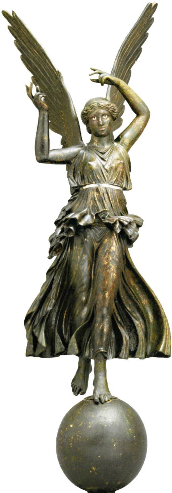
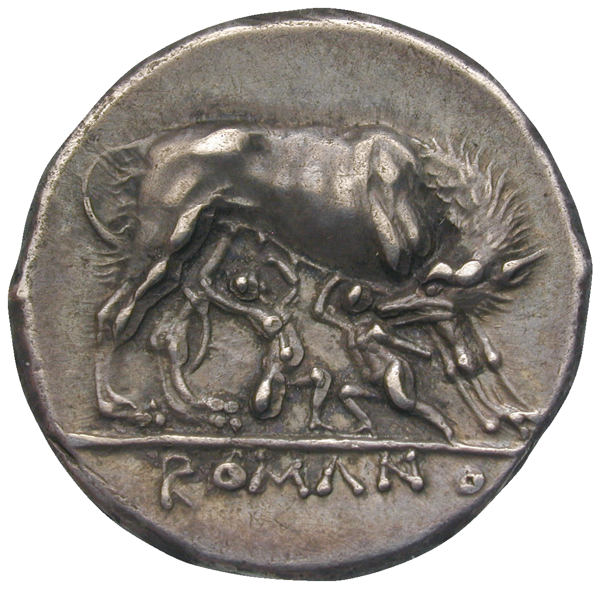
Todos los relatos literarios y cinematográficos sobre la Antigua Roma son de algún modo denunciatorios. Todos los romanos parecen groseros, disolutos, crueles, glotones y holgazanes. El cristianismo es irreconciliable con las culturas paganas. A Roma le tocó en suerte especialmente. Podría pensarse que Bizancio, o los celadores de la fe pura —los inquisidores—, o los católicos-conquistadores en América Latina eran misericordiosos.
El mundo postlatino, incluido el siglo XX, no es menos espantoso por su disolución, por la crueldad sin sentido de las guerras y por la relatividad de la paz.
Volvamos, sin embargo, a nuestro tema. Hablemos de estadística. ¿De qué da testimonio la ciencia estadística, o el inventario de las construcciones públicas de Roma, a comienzos del siglo III d. C., iniciado bajo César y Octaviano en el siglo I a. C.? Roma estaba dividida en 11 distritos (barrios): diez habitados más el foro Romano. En cada distrito había su basílica, o sede municipal del distrito. Allí se registraba a los recién nacidos y a los muertos, se guardaban los archivos y los contratos de los ciudadanos, funcionaba la funeraria y se instalaba la bolsa. En la sede transcurría la vida civil del barrio.
En Roma se construían ínsulas (viviendas municipales para desempleados y ciudadanos de escasos recursos), templos, casas y palacios, termas, puentes, calzadas, mercados, anfiteatros, bibliotecas, arcos de triunfo y foros. Puede decirse que la arquitectura de los edificios reflejaba por primera vez la estructura de la sociedad civil urbana tal como la conocemos hoy.
III. La arquitectura como teatro
Pero lo que de verdad impresiona es la potencia, el alcance de la construcción y la perfección de la técnica constructiva.
En las imágenes desde el cosmos se ve que el mapa moderno de las calzadas de Italia se parece a una telaraña o a un sistema circulatorio con el corazón en Roma. Prácticamente todas las carreteras modernas se superponen a las antiguas romanas. Si se enderezaran, podrían ceñir tres veces la Tierra por el ecuador. Según los datos de los arqueólogos, los romanos aprendieron la construcción de grandes calzadas, empedrados y aceras de los etruscos. Pero la calidad de la construcción y su extensión eran otras. Construían las calzadas en tres o cuatro capas, hundiendo en la capa de tierra, la penúltima, a 15 cm en el suelo, guijarros tallados. A los lados de la calzada se plantaban pinos piñoneros y árboles frutales, y se colocaban indicadores de direcciones y distancias. Junto a las calzadas había mesones, pequeños albergues, mausoleos-torres (torreones), como la «Tumba del general-senador Cecilio Metelo» al borde de la Vía Apia. Es un ejemplo de lo que se ha conservado hasta nuestros días. Pero tales torreones eran muchos; este no es el único. Ya en el siglo II a. C. apareció el correo regular.
La historia tiene diversos puntos de partida. Son quizá convencionales, como, por ejemplo, los primeros Juegos Olímpicos del año 773 a. C. para la Antigua Grecia. Y para Roma tal fecha convencional puede ser el año 451 a. C.: el tiempo de la adopción de las Doce Tablas, de la formación del nuevo Estado republicano de derecho con capital en Roma. El indicador del nivel de la civilización romana son las calzadas, el abastecimiento de agua (acueductos), los puentes, etc., todo lo que también hoy en todo el mundo es indicador del nivel de cultura. Las calzadas de Roma son además una cosmovisión, un vínculo con el mundo circundante, con el tiempo. Si se piensa, se mantuvo en Europa hasta comienzos del siglo XX. La técnica del desplazamiento y la velocidad del desplazamiento casi no cambiaron. El mismo hombre a caballo, o en carroza, o en carreta tirada por seis, y más a menudo cuatro caballos. Muchos siglos la gente viajó a la misma velocidad. El hombre tenía la posibilidad de reflexionar en el camino, de contemplar los detalles. El detalle tenía enorme significación. El cuadro del mundo se componía de multitud de elementos equivalentes, y el hombre no estaba fuera, sino dentro de él. Las velocidades de las máquinas y de los aeroplanos barrieron los detalles y las minucias del mundo. ¿Qué podemos ver desde la ventana de un tren, de un coche o de un avión? El tiempo estrecha el espacio. Pero hasta el siglo XX las potentes calzadas romanas eran además filosofía, y reflexión, y percepción del mundo, cuadros del mundo. Detalles artísticos, minucias de la palabra-descripción.
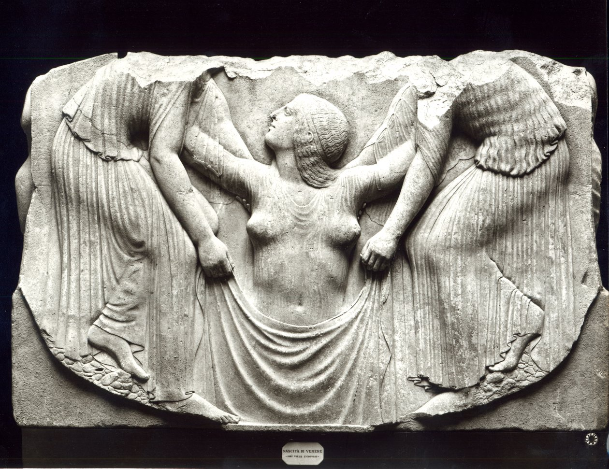
Las calzadas de la civilización: he ahí lo que Roma dejó a Europa tras de sí. ¿Qué más dejó en memoria de sí la civilización romana?
Sin duda, el acueducto. «Como hasta hoy llegó el acueducto, labrado aún por los esclavos de Roma». En nuestro pasado especular Vladímir Mayakovski define lo principal: la civilización del agua. Aquí Roma no tenía rivales. El agua de las fuentes, el abastecimiento de agua de la ciudad, los ninfeos, las termas. Roma era una ciudad de flores, incluso en los alféizares de las ínsulas crecían violetas. Roma estaba rodeada de huertos con riego que hoy envidiaría cualquier agricultor. Los mercados romanos: la envidia de los siglos. Circulan extraños rumores de que en el imperio sangriento no hubo en su historia enfermedades infecciosas. La perfección ingenieril del puente-acueducto y de las obras subterráneas hidráulicas y de alcantarillado no tiene analogías ni hoy. En Extremadura el acueducto romano de 60 arcos abastece de agua a todo el sur de España desde los tiempos de Augusto César. Y a las termas se iba no tanto a lavarse, cuanto a pasar el tiempo. El agua para Roma es un modo de vida. Para el cristianismo el agua es sacra. El agua del bautismo, de la ablución para Roma es la base de la civilización.
Como hoy, la construcción se dividía en obras militares, civiles y únicas. Las casas de vivienda, las ínsulas, los puentes, los arcos, aunque no eran idénticos, eran semejantes, pues en la base de sus construcciones estaba la experiencia (o la escuela) de la construcción tipificada. El elemento básico, frecuentemente repetido, era, se piensa, el ARCO. El arco romano equivale al períptero griego. Puentes de arcos y pilotes, que se usan hasta hoy. Otra construcción fue propuesta solo a finales del siglo XIX por Jean Eiffel. El puente Golden Gate de San Francisco. Y antes se construían puentes de arcos y pilotes, como en Roma. Arcos de triunfo: de un solo vano, como el arco de Tito, o de tres vanos, como el de Septimio Severo. O, por ejemplo, la solución arquitectónica de los anfiteatros. Despleguemos el elipsoide del volumen y resultará un puente o un acueducto con la repetición rítmica de los vanos de arco por toda la longitud o el perímetro del edificio. Ejemplo de laconsimo y racionalismo que yacen en la base de la conciencia artística. Puede llamárselos formadores de estilo. El arco: base de la arquitectura de cúpula creada por Roma, la misma base figurativo-constructiva del arte de construir latino que para Grecia fue el períptero con relación de lados largo y corto de 1 a 0,65. Por lo demás, es recordatorio de que esto lo sabe todo el mundo desde hace más de dos mil años.
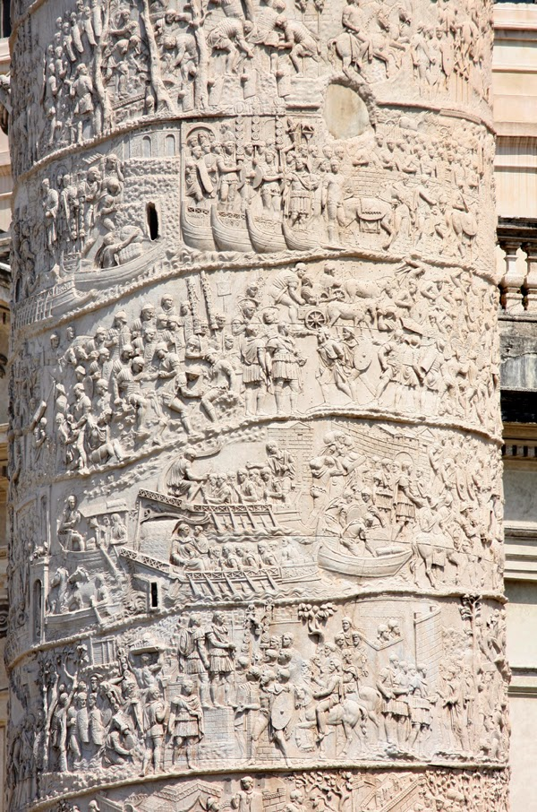
Hoy el arco de Tito está solitario, privado de su conjunto: el foro de los Flavios. Aunque del foro algo ha quedado. El anfiteatro Flavio, el Coliseo, construido sobre el lugar de los estanques de la Casa Dorada de Nerón. Pero nuestra imaginación calla, y el arco de Constantino está más cerca del Coliseo que el arco de Tito. Salta a la vista el parecido casi calco del Arco de Triunfo de Napoleón, erigido en París tras la campaña de Egipto, con el arco de Tito, erigido en honor de la victoria en la tercera guerra judía. Igual que la columna Vendôme de Napoleón en la plaza Vendôme de París repite la idea y la construcción de la columna de Trajano, en honor de la victoria del emperador sobre los dacios, que vivían a orillas del Danubio. Es la pulsación romana en el clasicismo europeo del siglo XIX. El clasicismo europeo respira el aire de las cumbres montañosas, se eleva sobre la tierra, está sobre coturnos. El patetismo de los vencedores coronados con laureles de triunfadores, con la Victoria alada a la espalda. El clasicismo es la afirmación de las virtudes civiles del servicio y del sentimiento de lo bello en el mundo visible ordenado.
Consideremos la clásica latina también desde un punto de vista psicológico. Hay diferencia en la sensación del hombre que está ante el arco, entrada al foro, y la sensación de sí mismo «en el foro». Dos sentimientos distintos. Voy por la calle, hombre privado, con paso no obligatorio. Y he aquí que en el foro ya soy ciudadano de una gran potencia, con la mano alzada para el saludo. Vivo una vida convencional-social distinta. Muy importante es esa escisión psicológica de los ciudadanos del Imperio Romano en el «yo» interior y el exterior, público y privado. La vida en presencia de extraños y en la propia casa. Cuán cercano nos es esto, y cuán lejana la indivisible integridad griega de lo espiritual y lo corporal. En el ideal, desde luego. La arquitectura romana es civil no solo porque nació de una sociedad civil. Sino también porque revela un tipo psicológico de comportamiento desconocido hasta entonces. Y la nueva sociedad europea futura hereda no solo «Felicita, calles, puentes…», sino también la semejanza inconsciente o a veces consciente consigo misma con el mundo que fue. Nos interesa su historia y su arqueología, y lo comprendemos y reconocemos en él.
Los espectáculos del Coliseo: concentración, coágulo del comportamiento de los fanáticos de todos los tiempos en los estadios. La descifración de las inscripciones rayadas en los bancos y las paredes del Coliseo es un testimonio interesante de una conciencia plebeya de masas casi inmóvil o disuelta en el tiempo. Dejar el propio nombre, escribir a qué equivalen «Agripa + Marcelo + Silvia». Y también dibujitos obscenos y simples, como los que los adolescentes dibujan en el baño escolar. Y todo esto chapotea dentro del elipsoide construido, que no tiene igual por su dirección arquitectónica y su técnica constructiva. Hacia el siglo I d. C. la tecnología constructiva, el pensamiento ingenieril alcanzan las cimas de la genialidad. El anfiteatro destruido en dos tercios nos cuenta que en el ámbito de la arquitectura del espectáculo la humanidad no solo no ha avanzado, sino que no puede repetir lo que fue creado. Quizá solo copiar débilmente la idea misma del anfiteatro. En tiempo lluvioso o ventoso, sobre el Coliseo se tensaba un techo, construido por ingenieros navales. Aún más asombroso es que el Coliseo fue levantado sobre el agua y su enorme masa reposa sobre pilotes. El enigma del arte constructivo lo es literalmente todo. Las investigaciones del fundamento del Coliseo a mediados del siglo XIX mostraron que bajo los arcos superficiales del anfiteatro hay además otros subterráneos, de indestructible hormigón romano sumergido en el agua, que soportan todo ese peso. Hoy, cuando se camina entre las ruinas, asombra la misteriosa e incomprensible potencia del imperio romano. La desnudez del material permite examinar de cerca la fábrica de ladrillo, o más bien la multitud de fábricas de ladrillo en combinación con bloques de piedra, construcciones de hormigón y plinfas (combinación de finas capas de arcilla cocida con cascote). Tal examen minucioso de los detalles de la técnica constructiva recuerda el placer que obtenemos de las costuras de los vestidos antiguos, de la tecnología de la costura a mano. Y uno comprende que la estética oculta de los secretos de cualquier construcción es prenda de la belleza y la solidez del producto acabado. En tal comparación no hay nada paradójico. Solo la arquitectura y el traje son, en esencia, la unión de la materia con la idea. Precisamente del dominio de la tecnología, de la ingeniería depende la perfección de las ideas absolutas, que son las obras de arquitectura. Como de la exactitud del corte y del acabado depende la perfección de las líneas del vestido.
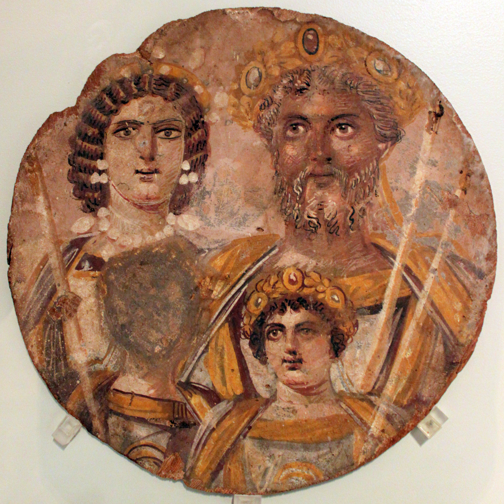
A mediados del siglo XV, el genio de la arquitectura del Renacimiento, tardío descendiente de la cultura latina, Filippo Brunelleschi, resolvía muchas cuestiones ingenieriles y constructivas para la erección de la cúpula de la catedral florentina de Santa María del Fiore. Había que construir una cúpula que no se deformara con el tiempo. Y halló la única solución correcta: aplicó la fábrica romana de ladrillo (típica de la arquitectura romana) «a cola de pez».
Todo lo que los romanos sabían de arquitectura, ingeniería y técnica constructiva está descrito en los «Diez libros de arquitectura» del conocido arquitecto y teórico Vitruvio, contemporáneo de César y Augusto. ¿Es actual este libro hoy? Hasta hoy se traduce a todas las lenguas del mundo. Es manual y a la vez superventas histórico.
La psicología de los espectáculos democráticos de masas es vulgar y absolutamente conservadora. Comparemos el comportamiento de los aficionados en los estadios de hoy con el de los romanos. Había que sentar a ochenta mil personas según los rangos, y para ello existía un cargo especial. Los disignatores vigilaban el orden externo y la colocación en las gradas. A la arena se soltaban también animales salvajes: leones y elefantes. Los mataban con la misma crueldad, y había escuelas especiales de gladiadores que enseñaban la batalla de arena, teatral, con animales. Misericordiosas no pueden llamarse estas diversiones de ningún modo. Las sentencias «el dinero no huele» y «el olor de la sangre del enemigo es bueno», junto a los grandes logros de la civilización, también nos llegaron de Roma.
La gran ciudad, que vivió durante siglos, como cualquier otra capital estatal, en el ritmo tenso de la historia de caídas, auge, construcción y decadencia. Se demolían barrios enteros, se levantaban otros nuevos. En Ostia sobrevivieron ínsulas: casas de renta. En el sur de Italia aún funciona el acueducto de César. Por el puente de Tiberio cruzan a diario los habitantes de la ciudad de Rímini. Por las antiguas calzadas romanas: automóviles. Los foros: magníficas ruinas, por las que caminan los turistas. Aún funcionan en algunos lugares las antiguas fuentes romanas. Y junto a la fuente de Trevi el tiempo se detiene en el gesto, elaborado a lo largo de dos milenios, de la mano que arroja una moneda al agua. La ciudad eterna se conjura con el gesto del eterno retorno. Arroja una moneda al agua si quieres volver. Así en la ciudad de Sant'Arcangelo se arrojan moneditas en un pozo etrusco conservado. Sobre él hoy se alza un restaurante, decorado por los clásicos del cine italiano Tonino Guerra y Federico Fellini.
Ya desde hace dos milenios entran y salen del Panteón romano millones de turistas de todo el mundo. Contemporáneo del historiador Tácito y del filósofo en el trono Marco Aurelio, del siglo II d. C., el Panteón representa la cumbre del genio espiritual y constructivo de Roma. El Panteón fue concebido como templo de todos los dioses. Hoy es la iglesia de Santa María Rotonda. El Panteón se construyó a lo largo de más de 10 años (116-128): primero el cónsul Agripa, y después el emperador Adriano Antonino. Existe la versión, apoyada por el historiador y escritor Ebers, de que Adriano, gran admirador del arte griego, arqueólogo, admirador de Platón, cedió a la influencia de los cristianos. Su guardaespaldas era un sirio, el hermoso Antínoo, adepto de las ideas y valores cristianos. La fama histórica le atribuía la intención de poner en el Panteón, en una de las hornacinas del primer piso, los símbolos cristianos de la fe. Pero esta intención no se llevó a cabo. En una conjura fue muerto el guardaespaldas. Conmocionado e inconsolable, Adriano se marchó a Grecia. En Atenas, ante el templo de Zeus, se conserva el hermoso y aéreo arco de Adriano y algunas construcciones forales. No hay historia en modo subjuntivo; sin embargo, como hipótesis, es interesante suponer cómo se habría desarrollado la historia cristiana si Adriano hubiera abierto la primera iglesia oficial en el Panteón… No pudo ocurrir, pues otro era el Designio. En las hornacinas del primer piso del Panteón se alternaban los dioses grecorromanos con los orientales, Zeus con Mitra. El Panteón era necesario, pues Roma se había convertido en rehén de su inabarcable condición imperial y de que la ciudadanía en el Imperio Romano la obtenían ciertos grupos de extranjeros bárbaros. A partir de Tiberio, y bajo el emperador Caracalla, todos los habitantes del imperio se hicieron ciudadanos suyos. En lo sucesivo la política nacional y la política de las relaciones jurídicas civiles se volvían cada vez más complejas y peligrosas para el imperio. Así que el templo reconciliador de todos los dioses —el Panteón— era necesario. Con el tiempo perdió su esplendor externo, pero se mantuvo en pie en todas las catástrofes históricas. Su fachada hoy es de un gris aburrido. Se parece a un tanque de petróleo con un pórtico ático pegado, como de otro edificio. Pero, como antaño, la impresión emocional principal la produce el interior. La semiesfera ideal se apoya directamente sobre la base, sobre el suelo. Hoy el suelo del Panteón ni remotamente recuerda la hermosa «tierra» original del templo. El primer piso está dedicado a todos los dioses, y los dioses son accesibles al sacrificio de los fieles. La plaza circular del templo con acceso simple a los altares: igualdad y corrección política del hipócrita Roma respecto a todos los súbditos. Todos son iguales en el imperio en su plegaria a dios en lengua materna. Aunque Zeus está, con todo, más cerca del pueblo, y su altar se distingue por su tamaño y belleza justo frente a la entrada del Panteón. Entre el primer y el segundo piso hay una ancha cornisa saliente, interrumpida solo por la hornacina-concha del altar de Zeus. ¿Qué significan esas hornacinas-ventanas monótonas, a intervalos iguales, ciegas, es decir, que no tienen salida al exterior? Se llaman ventanas porque así están resueltas arquitectónicamente. Esto, desde luego, no es simple ornamento decorativo del templo. Los altares son distintos para cada uno, pero las ventanas, vueltas hacia dentro de sí mismas, son univalorativas para todos. Son únicos para todos los valores éticos del orden interior en todas las lenguas y todas las tradiciones. Sobre la ancha cornisa continua del segundo piso reposa la poderosa cúpula del Panteón, con un único ojo de nueve metros de diámetro que mira al cielo. ¿O alguien mira día y noche al Panteón a través de su Ojo? La cúpula maciza de hormigón se compone de casetones perfilados. A veces bajo la cúpula pende una nube de polvo solar, y los rayos se vuelven flechas visibles de luz. A veces está nublado. Pero nunca la iluminación es igual, a causa de las sombras deslizantes por los cuadrados de los casetones. La cúpula es cósmicamente abstracta y a la vez concreta. El cielo sobre nosotros, multilingües pendencieros, santos y pecadores, buenos y ávidos, es uno. El Panteón es sin precedentes. Repetir su arquitectura es imposible, como imposible responder a una serie de preguntas ligadas al nivel de las ideas filosóficas y al nivel ingenieril de la realización del Panteón. Sí, los romanos guerreaban, eran crueles en sus diversiones y relaciones. Pero construyeron el Panteón. Horacio, Ovidio Nasón, Plauto, Tácito: esos son sus poetas, sus historiadores.
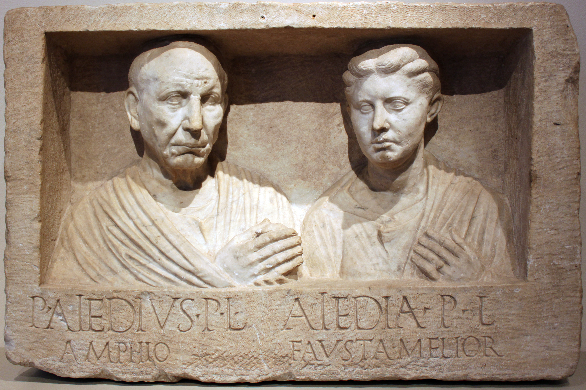
En el Panteón se conserva bien el fresco del siglo XV del pintor Melozzo da Forlì «La Anunciación». Pintura maravillosa. Melodía de alta armonía, pureza y belleza. Se ha fundido en uno con la hornacina del Panteón romano. Hace mucho que son uno y continuos, como la ciudad misma, como los museos del Vaticano. Adivinación a través del sueño del «recuerdo del futuro».
En medio de la plaza ante los edificios del Capitolio, sobre la colina Capitolina, se alza la copia en bronce de la estatua del emperador Marco Aurelio. Aquí la Antigüedad y el Renacimiento se han entrelazado y conjugan el enigma del genio de Miguel Ángel y el enigma del genio de Roma.
IV. El mundo es un teatro, y los hombres en él, actores
El filósofo Marco Aurelio conmovía a Fiódor Mijáilovich Dostoievski por la pugna de su alma. En verdad, el alma de este hombre era arena de la lucha de la luz con las tinieblas. Aurelio está representado sentado sobre un caballo, elevado sobre los conciudadanos, los pueblos, la historia. Sin signos de valor militar, con el gesto de bendición, nos presenta la imagen del «padre de la Patria». ¿Y qué milagro es este? La composición del monumento ecuestre, prácticamente sin cambios (como los puentes, acueductos, arcos, anfiteatros, palacios), llegó hasta nosotros a través de los siglos y se encarnó (lejos de la mejor variante) en Moscú del siglo XX, frente al Soviet de Moscú, en la persona del fundador de nuestra capital, el príncipe vladimiriano Yuri Dolgoruki. La Antigüedad nos dejó los modelos del arte religioso y civil de la arquitectura, la escultura, la pintura.
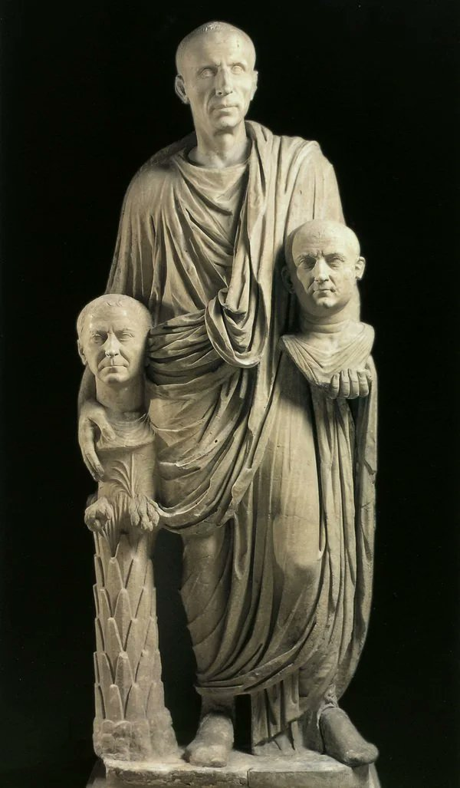
Recordemos las comedias del dramaturgo Plauto, ingeniosas comedias populares de la vida de los plebeyos, mercaderes, guerreros, esclavos. Plauto vivió una vida abigarrada, llena de viajes y peripecias. Fue actor, cambió de profesión y de lugar de residencia. Y si no se tiene en cuenta que su dramaturgia estaba bajo la influencia del helenismo, si se olvida que vivió a finales del siglo III y comienzos del II a. C., en tiempos de pasiones republicanas, batallas legislativas, a Plauto puede considerársele un dramaturgo europeo. Lean su «Soldado fanfarrón», «El grosero», «El persa», y comprenderán que sus obras están fuera del tiempo. Tal comedia con héroes populares bien podría haberla escrito Carlo Goldoni.
Los andamios-decorados históricos hace mucho que se derrumbaron, pero la forma clásica quedó. Por eso los comentamos incesantemente, llamando a nuestro comentario unas veces «clasicismo», otras «realismo», otras «realismo socialista», y otras —terrible pronunciarlo en voz alta— «estilo de la época de Mussolini». «… La realidad se adquiere exclusivamente por repetición o participación; todo lo que no tiene repetición o participación; todo lo que no tiene modelo para la imitación, carece de sentido, es decir, no es realidad», escribe en su estudio «El eterno retorno» Mircea Eliade. (M.E., El eterno retorno, San Petersburgo, 1998, p. 56).
En Italia se conserva hasta hoy la casa con atrio, con patio interior, rodeada de construcciones. Las excavaciones en Roma de la Casa Dorada de Nerón, la arqueología de la vieja Ostia, sobre todo de Herculano y Pompeya, muestran cómo vivían los ciudadanos acomodados en el imperio. El tiempo convierte los objetos de uso cotidiano en tesoros del arte. Tomemos, por ejemplo, las piezas romanas de vidrio, el bronce doméstico, cacerolas, lucernas, braseros.
Qué asombra más, difícil es decirlo. A mí: el vidrio y la pintura de las paredes de las casas. Nos han llegado obras casuales, es decir, conservadas tras la erupción del Vesubio del año 79 d. C. En un sarcófago natural quedaron emparedadas tres florecientes ciudades de veraneo: Herculano, Pompeya y Estabias. Una erupción exactamente igual puede ocurrir también hoy. A veces se piensa que las ciudades bajo la ceniza son un mensaje, una carta en una botella. En 1748-1760 comenzaron las excavaciones de Pompeya bajo la dirección del arqueólogo Alcuber, con la participación del genio alemán Johann Winckelmann. Estas excavaciones se convirtieron en lugar de peregrinación de toda Europa. Allí estuvieron Goethe, y el pintor Goya, y Louis-David. Se discutía sobre los destinos del mundo, sobre la belleza eterna y la fuerza del arte, allí nacían las ideas más fundamentales para el siglo XIX del clasicismo y del romanticismo, allí se unía el pasado con el futuro.
En 1764 salió el primer trabajo de Winckelmann «Sobre los nuevos descubrimientos de Herculano». Winckelmann era talentoso, sabía crear en torno a sí una efervescencia creadora, incluso el éxtasis de las gentes más diversas; estaba fanáticamente entregado a su vocación. Ilustrado del siglo XVIII, fue uno de los primeros en reflexionar sobre la cultura heroica, civil, filosófica de la Antigüedad: hacia dónde debe tender el futuro, de qué debe tomar ejemplo. Con sus ideas contagiaba a los contemporáneos, participando en la creación de una nueva ideología. En la «Historia del arte de la Antigüedad» cantó la Antigüedad, y designó como la mejor escultura al «Apolo» que desde el siglo XVI estaba en el Belvedere papal.
Las excavaciones duraron mucho, en varias etapas. Solo a comienzos del siglo XIX se volvieron científicas. Pero la sensación cultural, el impulso de la vida de la cultura europea sobre todo en la época del «Sturm und Drang» (finales del XVIII) siguieron siendo las excavaciones de Pompeya.
La destrucción de Pompeya y Herculano coincide con el Siglo de Oro de la poesía, la literatura, el arte. Durante la erupción del Vesubio murió el historiador Plinio el Viejo, autor de la «Historia natural». La catástrofe fue descrita por su sobrino Plinio el Joven. Su contemporáneo fue también el gran historiador Cornelio Tácito y el escandaloso autor del «Asno de oro», Apuleyo.
En la Roma imperial la cultura provincial era igual a la capitalina, prosperaba el comercio de objetos de uso y de lujo, existía el deseo de hacer la propia vida privada cómoda y confortable. El dinero en manos de los nuevos ricos elevó mucho el nivel de vida. Mesas, fuentes, lares y sillones en los atrios, donde en las horas vespertinas se sostenían conversaciones y disputas filosófico-literarias, apuestas sobre gladiadores. Y qué comodidades, sobre todo los retretes con cisterna, que asombran especialmente. Frescos de las casas con diversos ornamentos, escenas de la mitología, alegorías. Pero hoy no es esto lo importante. No en el contexto casa-pintura, sino en el contexto tiempo-pintura. No lo que eran entonces, sino cómo los vemos hoy, qué son para la historia. Admiramos la pintura del paisaje, del bodegón, del retrato, de las escenas teatral-alegóricas. En una de las paredes de la «Casa di Giuseppe», dividida por ornamentos en cuadros, están pintados simultáneamente bodegones, como diríamos hoy, al estilo del realismo español de los bodegones del siglo XVII o del hiperrealismo del siglo XX. Y divinas alegorías, pintadas con un toque apenas perceptible del pincel, como sueños de la pintura francesa de finales del siglo XIX. Las amazonas sentadas del Museo Arqueológico de Nápoles, por la solución espacial de la perspectiva, por el dinámico escorzo de las figuras, recuerdan fragmentos del techo de la Capilla Sixtina. Pero sobre todo asombra la belleza de la pintura, la audacia de la expresión de las «Máscaras» de la Casa Dorada de Pompeya. Todas las pinturas serán repetidas por los genios de la pintura europea de los siglos XV-XX. La panorámica de hierbas y aves de la Casa Dorada… Cómo definir, cómo describir los herbarios botánicos de la pintura de flores, hierbas, árboles, aves, la solución cromática de la panorámica que ciñe la habitación. Pero no sabemos los nombres de los artistas que prefiguraron toda la historia de la pintura europea. La pintura pompeyana es anónima. ¿Acaso se los consideraba pintores-tapiceros, decoradores en el oficio del diseño? ¿O eran grandes y famosos, simplemente sus nombres no nos han llegado? En las flores de los lirios, de las sencillas petunias, de la reseda, de los llantenes, de las hierbas y las rosas reconocemos el prado de la Primavera de la «Primavera» de Sandro Botticelli, que no conocía estas pinturas, pero acaso conocía otras. Como Rafael, cuando pintaba la Villa Farnesina para Pablo III o las «Logias» del Vaticano. El impulso hacia el nuevo estilo de la pintura decorativa y monumental fue el descubrimiento, a comienzos del siglo XVI, de la sala de la Casa Dorada de Nerón junto al Coliseo. Rafael fue nombrado por el papa León X jefe del departamento de antigüedades y arqueología romana. Y en efecto, las «Logias» del Vaticano son impensables fuera de los descubrimientos de la casa de Nerón.
En cada nueva vuelta de la cultura europea la antigüedad romana revive de nuevo, y por eso es prácticamente continua. Tras la victoria sobre Italia en la batalla de Marignano, Francisco I de Francia exigió como indemnización de guerra la estatua del «Laocoonte», que acababa de aparecer ante el mundo, pero el papa León X se negó a entregarla, haciendo en su lugar una copia del original. Dos católicos —el papa y el rey— en lucha por una estatua pagana. Argumento elocuente.
El siglo XVIII, en su afición a la historia artística romana, se desarrolla en dos direcciones. Por un lado, la formación del clasicismo como estilo, e incluso del clasicismo «revolucionario», proclamado por el revolucionario-pintor francés Jacques-Louis David. Por otro lado, la poética de las ruinas italo-romanas. Pero aún antes, en el siglo XVII, desde la época de Luis XIII, del cardenal Richelieu y sobre todo de Luis XIV, el clasicismo francés ya está cautivado por la ciudad regular romana con plazas y fuentes. El clasicismo mostró el cuadro centrípeto de la construcción lógica del espacio y a la vez de la espectacularidad carnavalesca. No imitando a Roma, pero sin duda siguiendo la tradición del clasicismo latino en la tradición artística y constructiva.
Volveremos a este tema en la conversación sobre la época de la Ilustración. Pero cómo no recordar a los gráficos y al grafismo a lápiz y al aguafuerte, creados por los propios arqueólogos. Dibujaban mucho en las excavaciones, y es todo un estrato inexplorado del grafismo documental. Hay también el grafismo poético de las ruinas, y las imágenes místico-fantásticas de las ruinas romanas. El italiano Giovanni Battista Piranesi creó 4 tomos de gráfica «Antigüedades romanas». Un sentido especial adquieren las ruinas en los lienzos del francés Hubert Robert. Un mundo antaño majestuoso, convertido en refugio de gentes que se apiñan, que se afanan. Están ocupadas en algo, viven en las ruinas de un mundo que no ven ni comprenden. Los hermosos lienzos de Robert: poesía del final. Entre las ruinas poéticas se revelan las almas de los héroes de la novela de Madame de Staël «Corinne». El poeta francés Chateaubriand escribía: «Quien no haya conservado ningún vínculo en la vida, debe mudarse a vivir a Roma. Allí la tierra que alimenta las reflexiones, los paseos, que siempre le hablarán de algo y le reemplazarán la sociedad». La poesía de las ruinas se convierte en uno de los refugios de las almas románticas y tristes; sus biografías se amplían hasta la literatura, la poesía, la música de Europa y Rusia de los siglos XVII-XIX.
Newstead, en tus torres
silba el viento sordo,
¡Casa de mis padres, has llegado
al abandono! —
escribe Byron sobre su finca de Newstead. La cultura de los países europeos se determina naturalmente por la memoria de la Antigüedad en los anales de la historia. A Rusia la antigüedad romana llega en parte con los arquitectos italianos, y más bien no la Antigüedad en su forma pura, sino a través del Renacimiento, velada e inaudible, sin voz. Pero con Pedro I es otra cosa. Quería colecciones, museos, como en otras cortes europeas. «Hace días compré una muchacha de mármol, la Venus. Por 30 efimki. En nada es inferior a la florentina, pero es aún mejor en que esta está entera», escribía el emisario de Pedro para el arte, Kologrivov, en sus informes desde Italia. En Rusia tardan en enganchar, pero corren rápido. Lo mismo ocurrió con la Antigüedad en la formación de la nueva conciencia artística, a lo cual se dedicará un capítulo aparte de nuestro trabajo.
Un significado especial tuvo el estilo imperial romano, pasado por el tamiz de la arquitectura del Renacimiento, en la tradición soviética. La imitación de las escalas, la pomposidad, el «orden», el culto a Roma y a Palladio pueden verse, entre otros, en la arquitectura de Shchúsev.
El género predilecto de la literatura europea y rusa: los «paseos». Paseos por las ciudades de Italia, paseos por Roma. Los autores comparten impresiones. Para generaciones de lectores rusos «Las imágenes de Italia» de Pável Murátov es libro de cabecera. O (de los últimos) Henry Morton «Paseos por Roma». Los paseos son comentario al pasado. Estamos en diálogo con la historia, con la cultura, con un fenómeno concreto. La pasión de cualquier hombre por los viajes, por el turismo, es incluso inconsciente. La necesidad del diálogo es mayor, quizá, que el acto de conocimiento.
Los sótanos de la memoria, los estratos de la historia, nuestra necesidad invencible de fundirnos con la eternidad, donde el eterno retorno es, quizá, el acto de la vida eterna.
En Roma se conserva casi sin cambios, como el Panteón, otro conjunto: la «Tumba de Adriano». Hoy este mausoleo se llama «Castillo del Ángel», y es imposible pasar junto a él. Es uno de los lugares centrales del turismo romano.
El emperador Adriano fue un gran admirador del helenismo y de Grecia. Tenía un gusto impecable. Pero precisamente la construcción de su tiempo muestra de forma palpable que las influencias helénicas, el barniz estético y espiritual estaban en un nivel de arte de Roma principialmente distinto. La tumba: conjunto urbano formado por una torre redonda-torreón (el mausoleo), el cuadrado del patio y un hermoso puente sobre el Tíber, adornado con esculturas. La tumba estaba abierta a la visita. Cualquier habitante de la ciudad podía realizar el complejo tránsito desde la vida, hirviente de cotidianidad, a través del río por el puente, entrar en el patio y subir por las escaleras de caracol arriba, y luego regresar por el mismo camino a la ciudad. Pero tras esta simple descripción del itinerario se esconde hoy una compleja vivencia emocional: el desplazamiento de uno mismo de un espacio a otro. Uno entra en el puente, adornado con esculturas mitológicas, con antorchas en las manos. El puente es el eslabón que une dos orillas: «esta» y «la otra», el otro mundo. Uno cruza el río del tiempo, el Leteo; la ciudad a la espalda, delante la entrada al otro mundo. Un filósofo diría: este camino es «ejercicio de muerte». Por la escalera que sube, al alcanzar la plataforma superior, uno mira «desde allí» el mundo que ha dejado. Uno llora de tristeza y de dicha, del amor al mundo en la otra orilla del río. Pero —¡oh, milagro!— uno puede volver a sus niños, a la tienda o al cargo senatorial. Pues al marchar, uno regresará de todos modos, espiritualmente renacido, transfigurado.
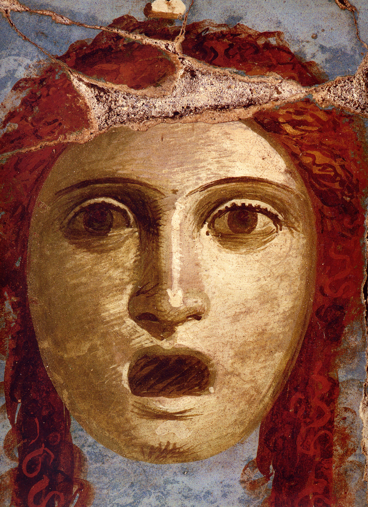
No hablamos de la arquitectura como nivel de construcción. Roma conocía todos los tipos y géneros de arquitectura civil que se demandan hoy, a comienzos del siglo XXI. Calzadas, templos, casas de varios pisos, edificios de negocios, puentes, signos simbólico-arquitectónicos de estatalidad, industria del entretenimiento. La pequeña y mediana empresa para la fabricación de vidrio, cosméticos, joyas, objetos de lujo, las grandes fábricas de hormigón y de toda clase de encargos estatales. ¿Y qué? Esta potencia poderosa, mecanismo perfectamente ajustado por la legislación civil y la disciplina, se derrumbó. Aceptando influencias del helenismo, de los etruscos, de Oriente, eran sin embargo excepcionalmente originales y autosuficientes. Esto es especialmente visible en cómo se representaban a sí mismos y a sus dioses.
Al representar a los dioses, los romanos en conjunto seguían la tradición helénica. Júpiter es Zeus, y Hermes es Mercurio. Júpiter con los rayos, y Mercurio con las mismas sandalias aladas y el caduceo en las manos. Sin embargo, la espiritualizada mitología griega fue adaptada en Roma a su manera. El mito se convirtió en alegoría. Afrodita perdió la universalidad del patronazgo igualitario de la Mujer, sea matrona o hetera. La Venus romana regía el amor terrenal, y a veces el de plaza. En cambio, los asuntos de la familia se entregaron a la romana Vesta, esposa del dios de los huertos y jardines, Vertumno. El instituto de las vestales era extraordinariamente poderoso. Las escuelas de Vesta se convirtieron en prototipo de los futuros monasterios femeninos y escuelas para niñas de buenas familias. La protección de los valores familiares era tan grande que las superioras de los templos de Vesta recibían privilegios senatoriales, lugares en las gradas junto a los emperadores y derecho de veto en el Senado. Su valor perdió también la diosa de la victoria Niké. En Roma fue llamada Victoria, lo que se refería a las victorias militares. Las acciones militares en tiempos más tardíos se denominaban «victorias». Pero había otra hipóstasis romana de Niké: se llamaba Fortuna, la ciega Fortuna de los destinos de soldados y en general de los hombres, de los audaces y supersticiosos varones de la gran potencia. Los romanos vivían en un mundo de supersticiones, de adivinaciones, incluso los más ilustrados, valientes y pragmáticos de ellos. En el corazón de la casa estaba el larario, donde vivían los espíritus protectores de la casa, los «domovoi», junto a los retratos del jefe de familia y de los antepasados. En cualquier fragmento del espejo roto de Roma nos reconocemos a nosotros mismos. El panteón mitológico helénico era una cultura externa, injertada. Quizá incluso una forma externa, tributo a una alta tradición. Y bajo el barniz de los juramentos a Júpiter, de los cánones en la representación de los «divinos» césares, de la retórica, vivían las antiguas supersticiones aldeanas, toda una ciencia de adivinación por las entrañas de animales y aves, toda una tradición de signos, advertencias, etc. El imperio poliétnico era receptivo a las influencias externas, sobre todo de griegos y etruscos. Pero las peculiaridades de la conciencia, de la lengua, de la relación con la naturaleza y el hombre permanecían originales, estables a lo largo de toda la historia de la civilización romana.
Hablemos del retrato romano. De la relación con la personalidad en la vida y en la muerte. Existen diversas versiones sobre el origen de este fenómeno. Precisamente el arte del retrato, la necesidad del retrato ilustra su diferencia con los griegos. No el rostro, imagen del hombre perfecto, bello de cuerpo y alma, héroe de las palestras y vencedor de las Olimpiadas. No los efebos, más hermosos que los cuales nadie pudo crear, sino el «yo» tal como me hicieron la naturaleza y papá con mamá. No la semejanza con los dioses, sino la irrepetibilidad, el testimonio sobre mí, Claudia o Agripina. La ciencia de la «fisiognómica», según el testimonio de Séneca, gozaba de gran prestigio. Recuerdo haber oído en el Ermitage, durante una exposición de retrato romano, una amena conferencia de un médico (de entre los visitantes). Contaba quién había padecido qué. No rostros: historia de enfermedades y pasiones. No hay que ser perfecto, hermoso. Hay que ser uno mismo. «La apariencia del emperador Claudio no carecía de prestancia ni de dignidad, pero solo cuando estaba de pie, sentado, sobre todo recostado. Pero cuando caminaba, le fallaban las débiles rodillas, y cuando hacía algo, lo afeeaba mucho: su risa era desagradable, su ira aborrecible, en los labios le aparecía espuma, de la nariz le manaba, la lengua se le enredaba, la cabeza le temblaba sin cesar…»: este es el retrato del emperador Claudio dejado por Suetonio (Cayo Suetonio Tranquilo. «Vida de los doce césares», M., 1993, p. 138).
«De aspecto era hermoso y en cualquier edad conservaba el atractivo, aunque no se esforzaba por acicalarse… Los ojos los tenía claros, y gustaba de que en ellos se vislumbrara una cierta fuerza divina, y se complacía cuando bajo su mirada insistente el interlocutor bajaba los ojos, como ante un resplandor solar. Los dientes los tenía ralos, pequeños, desiguales, los cabellos rojizos, las cejas unidas, las orejas pequeñas, la nariz aguileña y afilada, etc.». Esto sobre el divino Augusto, a quien unánimemente el pueblo le otorgó el nombre de «padre de la patria». Se conservan retratos verbales no solo de grandes hombres, sino también de simples ciudadanos corrientes del país.
La sociedad jurídica respeta y aprecia a sus ciudadanos, y los ciudadanos conocen el sentimiento de la propia dignidad. El soldado podía llegar a emperador, como, por ejemplo, Vespasiano Flavio. El liberto podía enriquecerse y obtener o comprar el patriciado. Entre los clientes estaba el poeta Horacio. Y la multitud que gritaba en los estadios no era anónima. El retrato podía encargárselo, en principio, cualquier ciudadano, y no uno solo, sino con toda la familia. Debe haber desarrollada autoconciencia, la noción de que yo soy una unidad de la sociedad. Fijarse a sí mismo es dejar a los descendientes la propia historia simple o aventurera, construir la genealogía.
En la cultura romana hay una conexión entre la organización de la familia-casa y el retrato, que en lo sucesivo se convertirá en tradición europea. La casa-familia debe «mantenerse», tener tradición de orden y herencia. No mitológica, sino real, concreta, ligada al fundador del linaje y a las leyes. Su retrato y los retratos de la familia, no ideales, sino documentales, guardados en el corazón de la casa: el atrio. He ahí el baluarte del apellido. Mi casa es mi fortaleza. Al mismo tiempo la conciencia de los romanos está escindida. «No recordamos cómo eran como actores de la vida. La máscara es el rostro público del ciudadano romano». Y en casa soy muy otro. En casa construyo mi propio mundo. El retrato del atrio es privado. A diferencia de los que el Estado erige a los «padres de la patria» y a sus grandes ciudadanos. Había también retratos históricos: de los héroes de la historia y de grandes ciudadanos muertos hace tiempo. Había retratos literarios: de Homero, de Sócrates, de Demóstenes, de Aristóteles, pero también eran «como si se parecieran», como del natural. En el método de fabricación entre el retrato documental del natural y el «según la imagen» no había diferencia.
Si continuamos el pensamiento, el retrato es una superación personal de la muerte. Tú te irás, pero quedará por los siglos de los siglos tu nombre, tu rostro, fijado en la piedra, en la pintura, en la fotografía. Sabían que eran finitos; la muerte, como en ninguna otra cultura, estaba siempre cerca, pues los romanos tenían tradiciones de suicidio. Sin embargo se resistían a la «partida para siempre», dejando a sus eternos dobles retratísticos. Roma amaba la concreción en todo. En el retrato también. Bello, no bello: cuestión relativa. Lo principal: reconocibilidad, documento. No me des una Venus: dame a mi abuela.
La conexión del retrato con el ritual de la muerte y los funerales es una tradición antigua, bien conocida por los romanos, de las culturas egipcia y etrusca. Como todo en esta supercivilización, cualquier influencia era repensada a su manera.
Nunca antes el retrato había tenido un carácter místico y laico tan complejo. Teniendo raíces rituales, cumplía funciones laicas. Exactamente igual que hoy en cualquier cultura europea. ¡Piensen solo! El retrato era estatal y privado. El encargo estatal glorifica al imperio y a sus héroes. Las fastuosas y solemnes efigies de dioses, emperadores, políticos adornaban foros, templos, estadios. El destino de los encargos privados, individuales: la casa y el crematorio.
En 1863 (o, como se dice, en 2616 desde la fundación de Roma) el arqueólogo aficionado Giuseppe Gagliardi halló en el lugar de Prima Porta la estatua del emperador Augusto Octaviano, perfectamente conservada, sin el menor daño. De cuerpo entero, con todos los atributos del poder supremo, presenta la imagen del caudillo de la nación. El retrato de Octaviano es solemne. Va vestido con las armas del vencedor. El manto se enrolla en torno al torso; en la mano izquierda, el cetro imperial. La mano derecha está alzada; el gesto significa la apelación al pueblo, moviliza la atención de la multitud. Como ungido de dios, va descalzo. Abajo, junto al pie, el emblema: un niño amorcillo sobre un delfín. El retrato de gala de Augusto puede llamarse texto. Uno lo lee como un protocolo y sabe todo: que es comandante en jefe supremo, ungido de dios y orador. Nosotros sabemos qué significa el lenguaje de los gestos y de los detalles en el arte de gala.
Aún más interesante fue el hallazgo de la estatua ecuestre en bronce del emperador Marco Aurelio, hoy en la plaza reconstruida por Miguel Ángel, ante el edificio del Capitolio: inolvidable impresión del «padre de la Patria» como centro del mundo. Retratos ecuestres hubo muchos; nos ha llegado uno. La composición llegó hasta nosotros a través de los siglos y los países. Los condotieros del Renacimiento, los emperadores europeos y rusos de Enrique IV a Alejandro III y, no temamos la comparación, Yuri Dolgoruki en Moscú: todos son vástagos del antepasado ecuestre Marco Aurelio.
Emperador-filósofo, conquistador, intelectual reflexivo, personalidad trágica de proto-cristiano con un heredero abyecto. Qué ejemplo de representación del soberano-hombre para todas las generaciones. Emperador romano, ídolo ecuestre y a la vez hombre vulnerable. Excepción de la composición tipo mundial puede llamarse el «Jinete de bronce» de Pedro I (escultor Falconet). Si Marco Aurelio era a la vez soberano y víctima del poder, el Pedro de Pushkin es el «tronador», en comparación con el cual Evgueni (Pushkin, «El jinete de bronce») es «menos que una unidad». La composición del Jinete de bronce es única entre los retratos ecuestres de soberanos.
Unas palabras más sobre el retrato de gala de Augusto del Ermitage (quizá una de las copias seriadas). Semidesnudo, descalzo, sentado en el trono, Augusto: personificación del poder. Con cetro en la mano izquierda y una Victoria sobre un globo en la derecha. Los rasgos del retrato se suavizan, se volatilizan, cediendo el lugar a una casi ideal helenidad. Es símbolo del poder único, cantado por los poetas del Siglo de Oro. «Hijo de los dioses benditos». Augusto mismo honraba la antigüedad griega, era apasionado coleccionista y arqueólogo.
El siglo de los poetas Virgilio y Ovidio, Horacio. Escritores-retóricos, en general el florecimiento de las disputas oratorio-jurídicas y de la literatura. Cicerón, Varrón, especialmente Vitruvio con sus trabajos sobre la historia de la arquitectura. Historiadores como César, Tito Livio, Cornelio Nepote. Una enumeración de nombres y el alcance de la construcción urbana, la liquidación de los barrios miserables, las fuentes y las violetas en los alféizares de las casas de renta responden plenamente a la definición de la época como Siglo de Oro.
El Siglo de Oro de Augusto, siglo I d. C., es memorable especialmente para la literatura europea por el significado que tuvo la poesía y la prosa de Cicerón, Horacio, Virgilio, Ovidio. Las traducciones no tienen cuenta ni número. Precisamente a Virgilio, autor de la «Eneida», hace Dante Alighieri su guía e interlocutor en el mundo con la cuenta atrás del tiempo, con la nueva toma de conciencia de la historia ética en la primera parte de la «Divina comedia», llamada «Infierno».
Y ya nuestro contemporáneo, premio Nobel, Iósif Brodski, quizá el último de todos, escribe infinitamente mucho sobre el significado de estos nombres para su creación. En la pieza «Mármol», en «Dido y Eneas», «Carta a Horacio». «Puesto que todo lo que he escrito, técnicamente está dirigido a ustedes: a ti personalmente, así como a los demás de ustedes. Pues, cuando uno escribe versos, se dirige en primer lugar no a los contemporáneos, y menos aún a los descendientes, sino a los predecesores. A aquellos que te dieron la lengua, a aquellos que te dieron las formas». He ahí las palabras principales. Mejor es imposible decirlo.
La forma misma de la «Carta»: en ella hay mucho de personal, íntimo, físicamente próximo, necesario. «Quién sabe, quizá yo aún te llame aquí, quizá aún te materialices al final incluso más nítidamente que en mis versos». Lo que suena como esperanza de que la poesía aún regrese.
Pero por ahora no aspiramos a contar toda la historia de Roma, del imperio romano, de las conquistas, de las victorias-derrotas, de la cultura y el arte. Hablamos de que la historia de más de un milenio del Imperio Romano fue ejemplo de una superpotencia con una civilización única. El genio de la nación se invirtió en la creación del ESTADO. Y el genio de la nación de Grecia, en el arte y la filosofía, en la producción de IDEAS. Grecia: Estado «metafísico», unido por la dualidad de las Olimpiadas y de la ideología poética (mitología). Al convertirse en Estado políticamente unificado por los esfuerzos de Alejandro, se desvaneció, se desmoronó en las temporales minimonarquías helenísticas de los sátrapas. Roma, en cambio, se construyó desde el principio como Estado jurídico y militar. ¡Qué historiadores nos dejó! Qué herencia epistolar. Solo Séneca ya vale mucho. Y Marco Aurelio, Lucrecio o Apuleyo. Estos escritores tuvieron y tienen un amplio círculo de lectura europea hasta hoy.
Nadie y nunca negó la disolución y la crueldad de los tiranos y del pueblo, sobre todo de los soldados. Y Roma es un Estado de soldados. Espectáculos sangrientos y crueles, combates de gladiadores, acoso por fieras. Los nombres de los emperadores —Nerón, Calígula— se hicieron apelativos de la maldad en combinación con la perversión de la naturaleza humana. Todo esto es así. Pero estaban fuera de la educación ético-espiritual religiosa. Ay, ay. Con la llegada de los tiempos religiosos, pese a los mandamientos de la fe, la crueldad no se fue. No se fue la intolerancia hacia el disidente, no se fue la lucha por el poder, la vanidad, el amor al dinero y demás. Incluso la adopción de la nueva fe no siempre fue un bien.
Y he aquí la pregunta: ¿cómo se derrumbó la mole poderosa, unida por calzadas, acueductos, correo, senado, ejército? De todas las civilizaciones precristianas, la destrucción precisamente de este nuestro espejo es lo que más preocupa a las mentes, y no solo de los historiadores. Un espacio enorme, el debilitamiento de la potencia soberana, la invasión de los bárbaros, la ausencia de una ideología única, entregada a la nueva religión de los cristianos. Roma es el modelo ideal para la investigación histórica, para la pregunta: cómo se forman y cómo desaparecen los Estados.
En una serie de sus trabajos, nuestro compatriota y contemporáneo, el historiador-etnólogo Lev Nikoláievich Gumiliov, aspira a dar respuesta a las preguntas sobre la vida y la desintegración de los imperios, y en general sobre los procesos de la historia, partiendo de su propia teoría del etnogénesis, es decir, del vínculo de los procesos étnicos con la biosfera, con el medio ambiente. No considera estos procesos aisladamente unos de otros. La desatención a la naturaleza, el trasvase de ríos, la tala de bosques, la violencia irreflexiva sobre ella conducen a consecuencias irreversibles. Al proceso del etnogénesis Gumiliov lo llama movimiento «pasional». Si se simplifica, energético. «El ethnos es un sistema que se desarrolla en el tiempo histórico, que tiene principio y fin; más exactamente, el etnogénesis es un proceso discreto» (L.N. Gumiliov. «El fin y el nuevo comienzo», 1997, p. 401). Todas las fases del etnogénesis (si el proceso no se interrumpe desde fuera) duran 1200-1500 años.
En sus trabajos «Etnogénesis y biosfera de la tierra», «El fin y el nuevo comienzo», Gumiliov presta especial atención a Roma como Estado casi modélico para su teoría. Muestra con ejemplos de la historia romana qué es ese agotamiento pasional, es decir, energético, y qué fases atraviesa cualquiera de los Estados del mundo.
Lev Nikoláievich considera que el punto de inflexión en el destino del ethnos romano se produjo en el año 193, con el «degenerado, monstruo, asesino, déspota», heredero del filósofo Marco Aurelio, el emperador Cómodo.
Gran disonancia entre las metrópolis y las provincias de Espiria, Britania, Laconia, Iliria. El general Septimio Severo tomó Roma con las tropas provinciales. Las provincias conquistadas se impusieron sobre Roma, y en consecuencia, hacia el siglo III todo el ejército romano, según Gumiliov, «estaba completado con extranjeros. Esto significaba que el ethnos romano, que había dejado de proporcionar defensores voluntarios de la patria, había perdido la pasionalidad. La estructura, la lengua y la cultura del imperio todavía se sostenían por inercia, mientras que los auténticos romanos se contaban por familias sueltas incluso en Italia». Y más: «Roma quedó simplemente como capital de un sistema enorme, que había dejado de ser expresión del ethnos romano». A ello se sumaba el rápido descenso de la curva de natalidad. El agotamiento pasional conduce a la detención del movimiento progresivo ya a comienzos del siglo III d. C. A ello se suma el comienzo (desde las periferias del imperio) del proceso de la Gran Migración de los Pueblos. En el siglo II d. C. pidieron tierras (hoy de Ucrania y Rumanía) las tribus bárbaras de los godos. Que nosotros pasamos hambre. Que nos dejen vivir al borde, y que nos den tierras, y nosotros a cambio… etc. Después empezaron a llegar los parientes. El imperio de los visigodos y ostrogodos ya en el siglo IV ocupó también el norte de Italia con capital en Rávena. Y la dinastía goda de los reyes españoles continuó hasta el siglo XV. Así. Ejemplos pueden aducirse muchísimos. La pérdida del nivel de pasionalidad conduce a la pérdida de la resistencia al medio, a la decadencia étnica y natural, lo que siempre se convierte en camino hacia la muerte. Y este es un proceso único para todo lo vivo. Para la gente simple, el «ascenso pasional» también es difícil, como tiempo de conquistas, guerras, agresión. Tanto el mínimo como el máximo de pasionalidad no siempre son benignos para la vida de los hombres y la cultura. Para los hombres es mejor la suave decadencia, cuando se han acumulado fuerzas, y los «vínculos sistémicos» entre las gentes, el Estado, los lazos intraétnicos se conservan: gracia de la potencia del Estado y del hombre común.
En su teoría del etnogénesis, desde el «estallido, el impulso hasta las fases finales», L.N. Gumiliov se apoya en la teoría cósmica de V.I. Vernadski sobre la unidad de la naturaleza de todo lo vivo: desde el impulso energético del Sol, los haces de energías de la Galaxia, hasta las fuerzas subterráneas. El impulso pasional engendra siempre varios ethnos, pero sus fases son siempre sincrónicas, simultáneas. Pero lo más interesante para nosotros: el comienzo. Siempre es misterioso y no aclarado. El comienzo mismo del ascenso, la formación, está, desde luego, envuelto en el misterio, llamado mito histórico de los nacimientos.
«No, todo yo no moriré. / El alma en la lira amada mi polvo sobrevivirá y la corrupción eludirá». Estas proféticas líneas se refieren tanto a la personalidad del genio como a toda una cultura. Roma no existe, pero mucho quedó: el derecho romano, la poesía, la historia, el genio constructivo de aquella gran civilización, los monumentos ecuestres y los retratos. Sus ejemplos y su experiencia se entrelazan en la apretada trenza de la belleza de la cultura europea.
Aduzcamos algunas fechas cronológicas. La formación de la religión cristiana y de la cultura cristiana se gestó en el seno del Imperio Romano en una oposición antirromana principial. Ninguna matanza sangrienta pudo destruir el advenimiento de la nueva era. Precisamente en las entrañas del Imperio Romano, en la provincia de Judea, en la ciudad de Belén, nació el Dios-Hombre, cuyo nombre es Jesús. Precisamente su Natividad se convirtió en fiesta universal de la nueva era, que dividió el mundo, la cosmovisión, en «antes» y «después» de su Natividad.
El año 284 d. C. se señala con el comienzo del gobierno del emperador Diocleciano. Tenía una idea utópica de devolver a Roma la grandeza del imperio de los Augustos. Era un hombre inteligente y un buen administrador. Llevó a cabo una serie de reformas en el Estado y el ejército. Sin embargo, nada resultó de ello, y sabemos por qué. Lo peor fue que el pobre Diocleciano descubrió en el círculo de la familia y de los fieles jefes militares a disidentes de una propiedad especialmente dañina: los cristianos. Y en el año 303 comenzó las persecuciones mediante «procesos políticos personales», causas por traición a la patria, etc. Y como en Roma había una buena base jurídica, todos los procesos se protocolizaban cuidadosamente y se convirtieron en lo sucesivo en base fidedigna de la literatura «hagiográfica» de los primeros cristianos. Diocleciano creó con sus propias manos a los santos mártires de la iglesia cristiana. Y a él, como adversario, lo vemos en los iconos hagiográficos, como a los santos. El emperador ordenó cerrar las iglesias, destruir los libros. En consecuencia aparecieron multitud de mártires en Occidente y en Oriente. Diocleciano cayó gravemente enfermo y abdicó en el año 305. En su «jubilación» voluntaria el emperador cultivaba hortalizas, criaba coles, y no quería saber nada. Y en el año 306 fue proclamado emperador Constantino el Grande, fundador de la nueva capital del nuevo Imperio Romano. Creador de Constantinopla en la provincia greco-romana de Bizancio.
En el año 313 ocurre un acontecimiento de la mayor importancia. Todas las acciones de Diocleciano son reconocidas como erróneas, y a las persecuciones de los cristianos se pone fin. La Iglesia cristiana es reconocida oficialmente igual a la antigua romana. Constantino por primera vez se mostró abiertamente leal al cristianismo. Esto se llama convencionalmente Edicto de Milán.
Después, ya menos de diez años más tarde, en el año 325, se celebró el Concilio de Nicea. Las herejías, las diversas disputas dentro del mundo cristiano, el poderoso en aquel tiempo Arrio, que había creado su propia doctrina sobre la naturaleza de Cristo, impedían la formación de una iglesia única. Constantino tomó sobre sí la iniciativa del concilio, llamado Concilio de Nicea. En crueles discusiones, pero bajo el patrocinio de Constantino, se determinaron los fundamentos de la Nueva Iglesia Ortodoxa y de su símbolo de fe: la «Trinidad». La Trinidad es el concepto de la igualdad del Padre y del Hijo. «En el nombre del Padre, del Hijo y del Espíritu Santo. Amén». Amén: conclusión. Esto es muy importante en la definición de la consustancialidad, la indivisibilidad y la no-fusión del Padre, del Hijo y del Espíritu Santo.
En el año 324 Constantino eligió Bizancio como su futuro lugar de residencia. Decidió instalarse en Oriente, aceptando la nueva fe, afirmando allí la potencia de la nueva, ya cristiana, Segunda Roma. Su capital no prescindió de anfiteatro y de hipódromo, de termas u otras comodidades habituales y de modo de vida. En las disputas era inflexible. Era poderoso, calculador, amaba el dinero, el lujo, y no siempre se comportaba como cristiano. Sin embargo, ¿quién puede subestimar su significado? El nuevo Estado cristiano Bizancio cuenta desde este momento el inicio del camino. El mismo Lev Gumiliov llamó a la población de Bizancio «el primer ethnos cristiano». La abigarrada población multilingüe tenía el vínculo sistémico más sólido: el cristianismo. Una ideología única. Constantino el Grande murió en el año 337.
Muchas discordias comenzaron tras su muerte, muy en el espíritu romano de la época tardía. Pero en el año 381 los edictos constantinianos y las reformas religiosas ponen definitivamente el punto. El cristianismo es declarado religión obligatoria y se prohíben los cultos paganos. En el año 395, tras la muerte del emperador Teodosio, el imperio se dividió definitivamente en Oriental y Occidental.
Pero tras las secas cifras, que construyen linealmente la historia, se ocultan acontecimientos y sentimientos muy otros. Constantino el Grande edificó en la frontera de Alemania y Luxemburgo, en la moderna Tréveris, un palacio con termas, jardines, fuentes y todas las delicias de la vida suntuosa de un magnate romano. Hoy el palacio de Tréveris asombra por sus gigantescas dimensiones, por el genio constructivo, por los mosaicos, por su altivez pagana en nada desvanecida. Los ciudadanos del Imperio Romano en el siglo IV, pese a las incursiones bárbaras, a las derrotas del ejército romano, a la adopción del cristianismo, todavía se sentían parte de una superpotencia. Conservaban su comida, su vida cotidiana, sus costumbres, sus termas y gladiadores, y ni por asomo pensaban en el derrumbe. Incluso entonces, cuando, según nuestra opinión, la palabra «fin» debería estar escrita en cada pared, como en el festín de Baltasar. La catástrofe llegaba no de golpe, y la conciencia, al parecer, se negaba a aceptarla, como ocurría a menudo antes, como ocurre también hoy. Negando la cosmovisión pagana, Bizancio se hallaba bajo el benéfico influjo de la cultura y de la instrucción antiguas, considerándolas patrimonio común, y no valores confesionales.